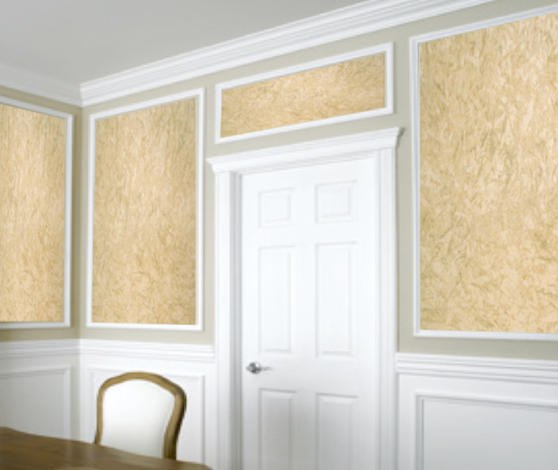
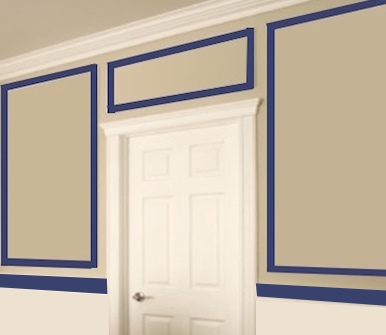
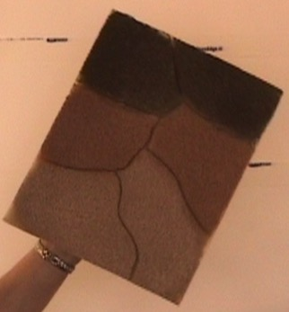
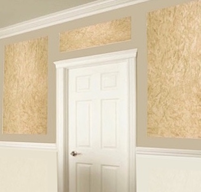
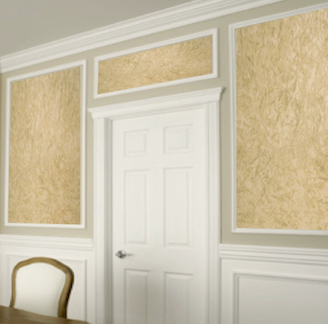
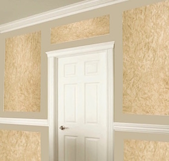
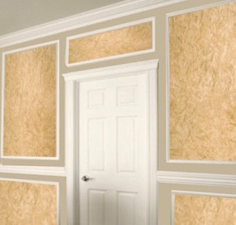

This popular faux finish, called ragging, on this wall is composed of 3 colors. The base coat above the chair rail is a color in the tan family. Below it, our base coat is in the white family. We mixed our glazes and the colors we used are listed in the E-book you get FREE with any of our kits as well the formulas used to mix a sample at Lowes or Sherwin Williams.


1) Basic Faux Painting Kit
(included with any of our Combo kits).
To buy yours today, visit our Faux Painting Store.
2) Tuck and Gather tool and Multi Color Faux Palette (both included with Basic Kit).
3) Blue tape.
4) Wooden frames (optional)
1) Tape off the area where your chair railing will be. Paint your base coat with a SATIN sheen. As we mentioned above, we used a tan color for above and a white color below. Tape off rectangular shapes on your wall with blue tape, with whatever measurements you desire.

2) Mix your glazes. We used Shade Grown, Light Brown and Latte. You can get the formula for these colors on our FREE E-Book, which you'll get with any kit order. Then load the Multi Color Faux Palette with 2 sections of each color.

3) Then, press the prepared Tuck and Gather tool onto each color, all at the same time, and then onto the wall. Vary your hand to avoid a fixed pattern. Follow instructions on the Faux Painting Workshop DVD that is included in the Basic Faux Painting Kit.
4) Once you take off the tape, you can stop here or add a wooden frame painted in white around the rectangular shapes that have the ragging as well as the white section below, to match your chair railing.


5) Another option is to paint the whole wall with the same base coat, which is in the tan family and add the ragging in rectangular shapes above and beneath where the chair railing will go, also. You can also choose to leave it with or without the white frames.


Our BASIC KIT INCLUDES Multi Color Faux Palette, 2 Poofy Pads, 2 Tuck and Gather tools and Workshop DVD. It's now on sale for only $41.99 for a limited time.